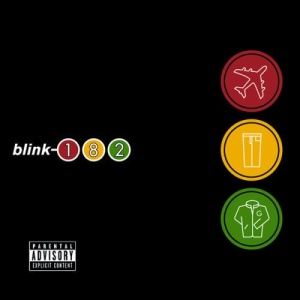

Take off Your Pants and Jacket (2001)

"Нажмите на картинку, чтобы открыть ее в полном размере
Описание
Take Off Your Pants and Jacket — четвёртый студийный альбом группы Blink-182, выпущенный в 2001 году. Название альбома — игра слов (английская идиома "take off your pants and jacket" означает "раздевайся и чувствуй себя как дома"). Альбом продолжил успех предыдущего и укрепил статус группы как главной поп-панк команды начала 2000-х.
Подробное описание
Альбом записывался в 2000-2001 годах и стал продолжением сотрудничества с продюсером Джерри Финном. Интересная особенность: при первом тираже альбом выходил в трёх разных версиях с разными бонус-треками — красная, жёлтая и синяя обложки. Песни "The Rock Show" и "First Date" были написаны как дань уважения панк-рок сцене Южной Калифорнии 80-х и 90-х годов. Альбом дебютировал на первом месте в чартах США, Канады и Германии, что подтвердило статус группы как суперзвезд мировой величины.
Характеристики
- Год выпуска: 2001
- Лейбл: MCA Records
- Продюсер: Джерри Финн
- Длительность: 39 минут
- Самые известные песни: "The Rock Show", "First Date", "Stay Together for the Kids"
- Интересный факт: Альбом выходил в трёх разных версиях с бонус-треками (красная, жёлтая и синяя)